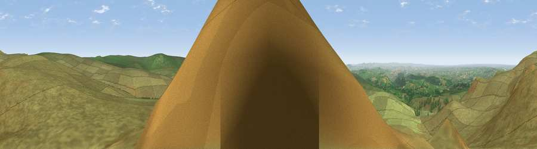

Hare Tor
#3015 in England · top 3% of its area beats it · near LydfordThe view, rendered

A 360° render of this exact spot computed from the terrain model, tree cover and land cover — summer colours, afternoon light, calibrated against photographs of famous viewpoints. Real trees, hedges and buildings will differ in detail.
The panorama
Grey silhouette: terrain skyline in each direction (720 bearings, Earth curvature and refraction included). Dashed green: skyline with trees (+15 m) and buildings (+8 m) as obstacles. Blue strip: how far the ground is visible on each bearing.
Where the view opens
Wedge length = distance to the farthest visible ground on that bearing (vegetation-aware). Rings at 10, 25 and 50 km.
What fills the view
96% grassland · 3% woodland ·
Angular shares of the visible panorama (visual magnitude), not map area. Landscape diversity 0.08 (0–1 Shannon).
Key numbers
More beautiful places nearby
The staircase of upgrades: each row has a higher view potential than everything closer. Driving times are estimates from straight-line distance, calibrated against real road routing — check an actual route before setting out.
| Place | Direction | Drive | Score |
|---|---|---|---|
| Great Links Tor | N · 3 km | ~6 min | 77.8 |
| Yes Tor | NNE · 7 km | ~14 min | 78.5 |
| Viewpoint near Dousland | S · 14 km | ~26 min | 81.0 |
| Shell Top | SSE · 21 km | ~35 min | 81.8 |
| Viewpoint near Lee Moor | S · 21 km | ~36 min | 82.7 |
| Viewpoint near Downderry | SSW · 37 km | ~56 min | 83.5 |
| Viewpoint near Stokeinteignhead | ESE · 40 km | ~60 min | 84.1 |
| Viewpoint near Crackington Haven | WNW · 43 km | ~63 min | 88.1 |
50.63987, -4.05092 · source: osm peak · position refined by local search. Computed location — check access rights before visiting.